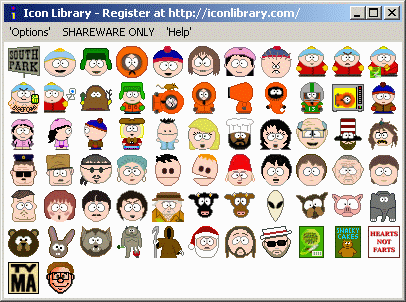

You can control come aspects of Icon Library by selecting items in the
'Options' menu. These options allow you to load new icon menus,
change colors, clear the application window or exit the program.
The Registered Menu option (also called New Menu in the
registered version of the application) allows you to reload the Icon Library
menu according to the contents of the icolib.ini
file. Normally, you will not need this option unless you have added an
icon category, re-arranged the positions of the menu items, renamed any of
the categories, or put the ICL files into a different folder. In other
words, if you make any change to the icolib.ini file, this option lets
you reload the menus without having to restart the program. Here is a
description of the icolib.ini file structure.
The Shareware Menu option is only provided in the shareware
version of Icon Library because there is no need for it in the full
registered version. Many of the icon categories do not contain icons in
the shareware version. The icon categories actually containing icons have
(SHAREWARE) appended to the description so you can see at a glance
which ones they are. The categories with icons are scattered throughout the
overall collection and so may be inconvenient for you to find them all.
This option brings all the shareware categories together into a single reduced
set of menus by loading the special icolib.in2 configuration file.
An example of the reduced menus looks like this.
The Background Color option allows you to change the color of the
Icon Library window so you can see what the displayed icons look like with
different colored backgrounds. Often the icons will appear to be different
when the background has been changed. Selecting this menu will display the
standard Windows color selector. The default color is white.
Here are a couple of examples of how icons look with different backgrounds.

When you save an icon as a BITMAP
file, you can specify the color representing the TRANSPARENCY COLOR.
The BMP Transparent Color option lets you select this color. Where ever
this color appears in a BITMAP image, the background will show through. If you
save the icon as an ICO icon file, there is no need to specify this
color because it is already built into the ICO format. The same
Windows color selector shown in the previous paragraph is used to chose
a transparency color.
The Clear Screen option simply removes all icons from the display
and only shows the selected (or default) background color. Icons are NOT
deleted from your disk drive by this option. Only the display is cleared.
Click on Exit to close the program. Of course, you can also stop
the program with the standard Windows close control X located at the
top-right corner of the Icon Library window.
Most of the remaining menu items on the
Icon Library menu bar provide a means for selecting from the large number of
categories available with this icon collection.